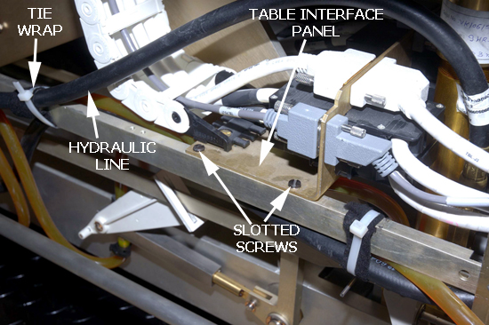
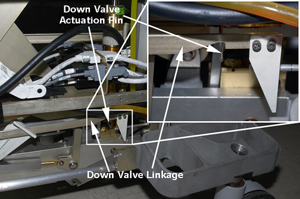
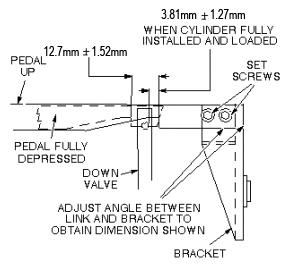

Operating Documentation
Direction 5500113, Rev# 3
Discovery MR450 1.5T Service Methods
Module Version 3.0, Version Date 8/19/08
Operating Documentation |
| Required Persons | Preliminary Reqs | Procedure | Finalization |
|---|---|---|---|
| 1 | 90 mins |
| Item | Qty | Effectivity | Part# | Manufacturer | |
|---|---|---|---|---|---|
| Small and Medium size Slotted Head screwdrivers | 1 each | - | - | - | |
| Needle Nosed Pliers | 1 | - | - | - | |
| 3/4 inch open-end wrench | 2 | - | - | - | |
| Very long shaft Slotted Head Screwdriver | 1 | - | - | - | |
| Absorbent Towels | Sufficient | - | - | - | |
| Item | Qty | Effectivity | Part# | Manufacturer | |
|---|---|---|---|---|---|
| Hydraulic Cylinder Assembly | 1 | - | 5142785 | - | |
| ||||
| PERSONAL INJURY POSSIBILITY! | ||||
| WHEN PERFORMING MAINTENANCE ON THE TABLE IN ITS UP POSITION, SEVERE PERSONAL INJURY CAN OCCUR IF TABLE IS ACCIDENTALLY lOWERED DURING MAINTENANCE PERFORMANCE. | ||||
| ENSURE THAT THE LOCK safety BAR IS SAFELY IN PLACE. |
Undock Patient Table and move it out of magnet room.
Raise Patient Table to full up position.
Fasten the Upper Bellows in the up position and remove the Lower Base Side Cover. Refer to the Patient Table Upper Bellows and Lower Base Side Cover Removal procedure.
| ||||
| PERSONAL INJURY POSSIBILITY! | ||||
| WHEN PERFORMING MAINTENANCE ON THE TABLE IN ITS UP POSITION, SEVERE PERSONAL INJURY CAN OCCUR IF TABLE IS ACCIDENTALLY LOWERED DURING MAINTENANCE PERFORMANCE. | ||||
| ENSURE THAT THE LOCK SAfety BAR IS SAFELY IN PLACE. |
Lower the Table Lock Safety Bar, and then lower the table to ensure weight is resting on Safety Bar.
Illustration 1: Table Lock Safety Bar

Manually slide cradle forward and prop up so you have access to Table Top Height Adjustment screw. For more information, refer to the Removing Cradle Assembly procedure.
Illustration 2: Prop Up Cradle

Use a standard head screw driver to remove the cover plug from Table Top Height Adjustment screw.
Use a needle nose pliers to remove e-clip from end of adjustment screw.
| NOTE: | Place a piece of tape over part of the e-clip before removing so that e-clip does not become lost during removal. |
At the lower front of the table chassis, remove right side and left side screws from the Table Interface Panel.
| NOTE: | Freeing up the Table Interface Panel allows you to move the panel back 2-3 inches and then angling it up, thus allowing you easier access to unscrew the cable connectors. |
Illustration 3: Right side of Table Interface Panel

Remove tie wrap and black cushion tape from the hydraulic line. See Illustration 3.
| ||||
| Be aware that when disconnecting the larger black cable connectors, they use aluminum screws that can be easily stripped. Do not over torque when replacing cable connectors on the Table Interface Panel. Likewise, use care when re-threading the screws. | ||||
On right side of table chassis, remove all forward side cable connectors from Table Interface Panel and secure them out of the way to fully expose base of hydraulic cylinder.
Illustration 4: Cable Connectors, Front Side of Panel

| NOTE: | Be certain you remove the cable connectors on the right
side of the table. This side gives you the best access to the hydraulic
cylinder base. VERY IMPORTANT: Be careful with the J1/J2 and J4/J5 black connectors. They use small, standard head screws that are made of lightweight aluminum and can be easily stripped. See Illustration 6. |
Use a long standard head screwdriver to manually press hydraulic cylinder down from the top (table top height adjustment screw) until it is fully retracted while holding open the down valve. Ideally, a second person is holding open the down valve. See Illustration 5.
Remove up sensor from collar bracket.
Place sufficient absorbent towels underneath work area.
Disconnect black hydraulic lines from base of hydraulic cylinder using two 3/4 inch open end wrenches, and then fasten upward and aside to avoid excess spillage. To prevent oil from draining from the reservoir, clamp the clear tube, remove the black clamp, and then remove the clear tube.
Remove e-clip from end of cylinder mounting pin at base of cylinder assembly.
Line up cut out on caster linkage with pin and then slide out cylinder mounting pin from base of hydraulic cylinder.
| NOTE: | Use brake pedal to engage brakes. |
Remove hydraulic cylinder from base of table chassis by angling the cylinder top toward to the rear as you lift the bottom (base) up and out. Be careful of linkage attached to the down valve.
Remove up sensor collar by pressing out pin.
Remove screw and washer from cylinder.
Replace collar and pin, flush both ends.
Replace and screw from replaced cylinder.
Prepare replacement cylinder for installation by pressing cylinder to its fully retracted position.
| NOTE: | It may be necessary to move linkage to fit actuation pin
of down valve into groove of linkage. Illustration 5: Down Valve Actuation Pin  |
Carefully angle bottom of cylinder into base of table, taking care not to bend actuation pin on Down valve.
Insert cylinder mounting pin securing base of hydraulic cylinder to frame of table and reattach e-clip.
Reattach up sensor cable bracket.
Reconnect black hydraulic lines to base of hydraulic cylinder.
Hold Down valve open and exercise Up Pump foot pedal. This bleeds the hydraulic system by shunting air to the hydraulic reservoir.
Align upper cylinder shaft with hole (collar) in bottom of table, and then slowly pump up cylinder until table goes up slightly. Guide the up sensor bracket into position.
| NOTE: | Ideally, a second person can help out by pumping up the table while the primary service personnel ensures that the top of the cylinder is going through the collar (hole in bottom of table). |
When top of cylinder reaches table top, reattach the e-clip.
Ensure that Lock Safety Bar is in the vertical (up) position.
Partially open bleed screw on hydraulic cylinder until no air bubbles are visible.
Open Down valve and lower table to its lowest position.
Bleed the cylinder again by partially opening bleed screw, when table is fully up, until no air bubbles are visible.
The second half of installing a new hydraulic cylinder entails reconnecting all cable connectors to the Table Interface Panel.
Reconnect all cable connectors to the front side of the Table Interface Panel. See Illustration 4.
| NOTE: | Be careful with the J1/J2 and J4/J5 black connectors.
They use small, standard head screws that are made of lightweight
aluminum and can be easily stripped. Illustration 6: Cable Connector Screws
|
Replace both Table Interface Panel screws on each side.
Put Upper Bellows in down position, and replace Lower Base Side Cover along with Front Base Cover.
Replace cover plug on table top, and then replace cradle assembly.
Perform the Table Top Height Adjustment procedure.
If necessary, add hydraulic oil to reservoir. Level should be 6.5 to 12.5 mm above “FULL LINE” when table is at lowest position.
Check Down valve linkage adjustment as shown in Illustration 7. Obtain desired tolerance between Down valve linkage and bracket by adjusting two set screws on bracket.
Illustration 7: Down Valve Linkage Adjustment

In a service browser, run the Coil Datapath Diagnostic tool.